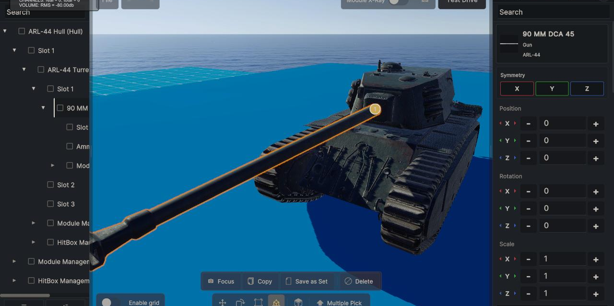

Vehicle Workshop Gun Simulation
中文 | English
Run this command at the repository root to replay the examples through the local Unity MCP.
python Docs/Manual/manual/tools/tutorials.py run gun-tutorial
The vehicle workshop simulates guns and shells without rebuilding the vehicle. Select an installed gun, choose a reload FireState, and configure shell subobjects for the simulation.
1. Select an installed gun
Open the vehicle in the workshop and select the gun already installed on it. The workshop edits that gun's simulation entry instead of creating a separate weapon.

2. Set a custom reload FireState
Choose the reload FireState that matches the intended behaviour:
| FireState | What to configure |
|---|---|
| Simple | Custom reload with ReloadTime |
Advanced (Advance) |
advanceMaxSmallAmmo sets the magazine capacity, advanceSmallReloadTime sets the interval between shots, and advanceLargeReloadTime sets the full refill time. |
| Drum | drumReloadTimes sets the reload durations for the individual backed-up rounds. drumFireDuration sets the firing interval. |
Scroll to Reload Type on the right and fill the fields for the selected mode. To try a magazine, set the capacity to 3, the short reload to 2.5 seconds, and the full refill to 14 seconds. For large magazines, the Advanced and Drum options let you hide the grouped ammo icons. Drum mode can fire a ready round while replenishing the backup rounds. Check the timing during a test drive.
3. Configure shell subobjects
Expand the gun's shell subobjects. Use Import Default Bullets to copy an existing game shell configuration, or press + to add a shell type from scratch. Then edit the basic shell data and the module-mode overrides for that shell.
After editing a shell, press Recalculate Bullet Info and read its debug display again. Shells that use the De Marre model show in-game estimates by range and impact angle. Other shell types use their own parameters. Compare the same range and angle before and after editing, then try the result in game.
4. Test in game
Run the vehicle in game to check reload timing, shell selection and the shell behaviour you configured. The debug penetration estimates shown by the simulation are estimates derived from the in-game inputs, so compare them against the actual in-game behaviour rather than treating them as a fixed reference.
Click to expand MCP actionsClick to collapse MCP actions
[
{
"tool": "invoke",
"arguments": {
"path": "static:ShanghaiWindy.Core.AssetBundleManager/LuaEnv/DoString",
"args": [
"local data, core = CS.ShanghaiWindy.Core.Data, CS.ShanghaiWindy.Core\nlocal gun = data.DIYUserCustomizeGunProperty()\ngun:SetPropertyInfos()\nlocal function has(name)\n return gun:GetEditableFields(false):Contains(name)\nend\nassert(has(\"ReloadTime\") and not has(\"advanceMaxSmallAmmo\"))\ngun.fireState:SetValue(core.FireState.Advance)\ngun.advanceMaxSmallAmmo.isEnabled = true\ngun.advanceMaxSmallAmmo:SetValue(3)\nassert(gun.advanceMaxSmallAmmo:GetValue() == 3 and has(\"advanceSmallReloadTime\") and not has(\"drumReloadTimes\"))\ngun.fireState:SetValue(core.FireState.Drum)\nassert(has(\"drumReloadTimes\") and has(\"drumFireDuration\") and not has(\"ReloadTime\"))\nlocal shell = data.PenetrateBulletProperty()\nshell.name:SetValue(\"Tutorial AP\")\ngun.bulletPropertyWrapper:GetValue():Add(shell)\nassert(gun.bulletPropertyWrapper:GetValue().Count == 1 and not has(\"FirePowerMultiplier\"))\nassert(shell:IsDemarrePeneration() and not data.HEATBulletProperty():IsDemarrePeneration())\nreturn \"Verified Simple, Advance, Drum and workshop AP entry\"",
"docs-workshop",
"null"
]
},
"expect": {
"contains": "Verified Simple, Advance, Drum and workshop AP entry"
}
}
]
Click to expand MCP actionsClick to collapse MCP actions
Select the installed gun on a test vehicle and use its ruleGuid from vehicle_rules as gun. The replay checks the mode fields and their values.
[
{
"tool": "vehicle_props",
"arguments": {
"ruleGuid": "${gun}"
},
"expect": {
"contains": "DIYUserCustomizeGunProperty"
}
},
{
"tool": "vehicle_set_props",
"arguments": {
"ruleGuid": "${gun}",
"json": "{\"fireState\":{\"value\":1},\"advanceMaxSmallAmmo\":{\"isEnabled\":true,\"value\":3},\"advanceSmallReloadTime\":{\"isEnabled\":true,\"value\":2.5},\"advanceLargeReloadTime\":{\"isEnabled\":true,\"value\":14}}"
},
"expect": {
"contains": "rebuilt"
}
},
{
"tool": "vehicle_props",
"arguments": {
"ruleGuid": "${gun}"
},
"expect": {
"contains": "\"advanceMaxSmallAmmo\":{\"isEnabled\":true,\"value\":3}"
}
}
]